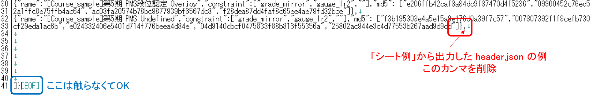

beatoraja の難易度表フォルダ内に段位認定コースを追加し、LR2に一括導入可能なコースセット(.lr2crs ファイル) を出力する方法の一例をご紹介します。
beatoraja 向けの作業では、難易度表の「header.json」に段位データを追加していきます。必要に応じてあらかじめ難易度表を開設しておいてください。
(難易度表の作成方法について で紹介しているサンプルが直接必要になる事はありません。手元の「header.json」から作業を始めればOKです。)
段位認定コースセット作成用シート (Google スプレッドシート)
ほとんどの作業は LR2/beatoraja 同時並行で進められます。
段位認定の情報を書き込むと LR2/beatoraja それぞれ公開に必要なコードが関数出力されるという どこかで見たような 流れで、当コラムはこのシートの使い方の解説が中心となります。
「シート例」の内容を コラム -難易度表の作成方法について で紹介したサンプル難易度表に追加すると このようになります。
サンプルセットのダウンロードは コチラ
シートでの作業時は、セル内改行およびセルの切り取りを使用しないでください。
既存データを引用すれば大丈夫です。書き方が分からない場合は 難易度表の作成方法について > 公開までの手順 > (2) header.json の編集 を参照してください。
* JSON書式ミス防止のための処置です。JSONの仕組みを把握していて 既存データの体裁を変更したくないという場合は省略し、最終出力の "course" 要素のみ追加してください。
* 難易度表をコース専用に使う場合も data_url は必ず指定しなければなりません。その場合 score.json の中身はブランク [] で大丈夫です。
* B5 セル「header_md5」は初期状態のままにしておいてください。
「シート例」を参考に、コース情報を記入してください。【必須】となっている項目に記入漏れがあると、コースデータが出力されない仕様となっています。
■ コースタイトル (B列)【必須】 *作成、テスト後に変更してもスコアデータは引き継がれますが、IRには一番最初にスコアを送信した時点でのコースタイトルが登録されます。
■ Line(LR2) (D列)【必須】 … 使用するレーン数を半角数字で記入してください。
■ 1曲目の曲情報 (E～G列)【必須】 … 旧LR2IR の末尾 bmsmd5= となっているURL もしくは md5 文字列が必須です。*難易度表に登録していない差分でも使用できます。
■ 2～5曲目の曲情報 (H～S列) … 4曲構成以外も対応しています。必要な分だけ記入し、使わない所は空欄にしておいてください。
md5 の値は、例えば beatoraja の選曲画面 Ctrl + F3 で取得できます。その他については bmsmd5 の効率的な取得方法について などを参照してください。
beatoraja で利用できる段位認定のオプション制限項目です。全て任意の記入項目ではありますが、beatoraja からの難易度表利用率は年々高まっています。ぜひ記入しておきましょう。
今回ご紹介する方法は 難易度表の仕様 > Course 要素に準拠していますが、トロフィー機能には対応しておりません。あしからずご了承ください。
「シート例」や下記補足情報を参考に、文字列コピペで正確に書き写してください。
LR2の段位認定に出来るだけ近づけたい場合は、「grade」欄に grade_mirror 「gauge」欄に gauge_lr2 「LN」欄に ln を指定し、「HS」「judge」は空欄にしてください。
各設定項目の補足情報 (beatoraja 0.8.4 時点 / 筆者は beatoraja の仕様に明るくないため、誤りがあるかもしれません。詳しい方おられましたらご教授ください)
■ grade
・grade_mirror : 譜面オプションMIRRORを許可
・grade_random : 譜面オプションRANDOM, R-RANDOM, S-RANDOM, MIRRORを許可
・(空欄) : grade_random と同様に扱われます(IRページは変化します)。Mocha-Repository では通常の楽曲同様に使用オプションが表示されます。
・今回紹介している手法の場合、正規縛りは設定不可？ のようです。
■ HS
・no_speed : ハイスピード設定無効
・(空欄) : ハイスピード設定有効
■ judge
・no_good : GOOD判定無効(BAD判定になります)
・no_great : GREAT/GOOD判定無効(BAD判定になります)
・(空欄) : 全判定有効
■ gauge
・gauge_lr2 : LR2段位ゲージを使用
・gauge_5k : 5KEY用段位ゲージを使用
・gauge_7k : 7KEY用段位ゲージを使用
・gauge_9k : 9KEY用段位ゲージを使用
・gauge_24k : 24KEY用段位ゲージを使用
・(空欄) : 未検証
・異なるプレイスタイルのゲージ設定を適用する事も可能なようです。(9KEY段位を7KEY段位ゲージで遊ぶなど)
・gauge_9k は gauge_lr2 よりも若干易しくなります。他のプレイスタイルは未検証ですが、恐らく独自のゲージ設定が備えられていると思われます。
■ LN
・ln : 末端判定なし (LR2仕様)
・cn : 末端判定あり (本家CN)
・hcn : 押下中ゲージ増加、踏み外し中ゲージ減少 (本家HCN)
・(空欄) : LN/CN/HCN 全て選択可能で、Mocha-Repository では通常の楽曲同様に使用オプション毎のページ内リンクが作成されます。
(2)～(3) を繰り返し、全コースのデータを記入していきます。行数が足りない場合は黒線より上に行追加してください。
コースリストのソートも検討しておきましょう。作成したコースは、beatoraja では行番号昇順(シートの並びと同順)、LR2 では降順(シートの並びと逆順) で表示されます。
スプレッドシートの Y列(黄緑) を ドラッグフィル し、出力されたコードの列全体をテキストファイルに貼り付けて保存します。このとき文字コードは Shift-JIS で保存してください。
最後に拡張子を .lr2crs に変更すれば配布用ファイルの完成です。LR2SETUP 画面にD&Dして確認しましょう。 *一覧から削除したい場合は LR2の選曲画面 > TAG EDITOR > DELETE
サンプル難易度表およびサンプルセット内の course_sample.lr2crs が「シート例」からの出力になっていますので、参考にしてください。
beatoraja の場合は難易度表の header.json を出力コードに沿って改変することで、段位認定コースのデータが読み込まれるようになります。
ただし、改変後の header.json に1コースも登録されていないと不具合が発生するので、必ず何かしらのコースを準備しておいてください。
スプレッドシートの Z列(深緑) をドラッグフィルし、出力されたコードの列全体を、現在難易度表に使用している header.json の中身に上書きします。
次に、コースデータの最終行末尾のカンマを削除 ]}, → ]} して保存してください。これを忘れると、段位認定どころか難易度表自体が読み込まれなくなりますので要注意！
不安な場合は header.json の中身を JSON Pretty Linter Ver3 に入力してみます。"JSON is valid!" と表示されれば問題ありません。

保存した header.json ファイルを難易度表のサーバーに上書きして、作業終了です。
サンプル難易度表およびサンプルセット内の header.json が「シート例」からの出力になっているので、参考にしてください。
beatoraja で段位認定を非公開テストしたい場合は、専用の難易度表を作成するか、こちらのコラム の「ローカル環境の難易度表データを本体プレイヤーに読み込ませる」を参考に。
テストプレイは原則オフラインで。md5の記入ミスやカスタマイズ項目の不備はIRの分裂に繋がります。各種IRへのスコア送信は取り消せませんので、十分注意してください。
公開時は LR2 と beatoraja で導入作業が変わる事を周知すると良いでしょう。サンプルセットの table.html にアナウンスの一例を置いておきました。
Mocha-Repository のプレイヤーページにある CLASS 表示など、IR独自の実装に対応したい場合はそれぞれサーバー管理者の方に依頼してください。
beatoraja で段位認定コースがうまく反映されない場合にまず確認すること
- 工程(2) コースの必須情報が記入されているか
- カスタマイズ項目のスペルミスの確認。スペース(空白文字)が挿入されていないか。コピペ推奨
- score.json が指定されているか
- 最低1コース以上登録されているか
- header.json / score.json のコードミス (JSON Pretty Linter Ver3)
- header.json / score.json の文字コードが UTF-8 になっているか (普通は大丈夫ですが、LR2用コースファイルのみ Shift-JIS が必要でややこしい)